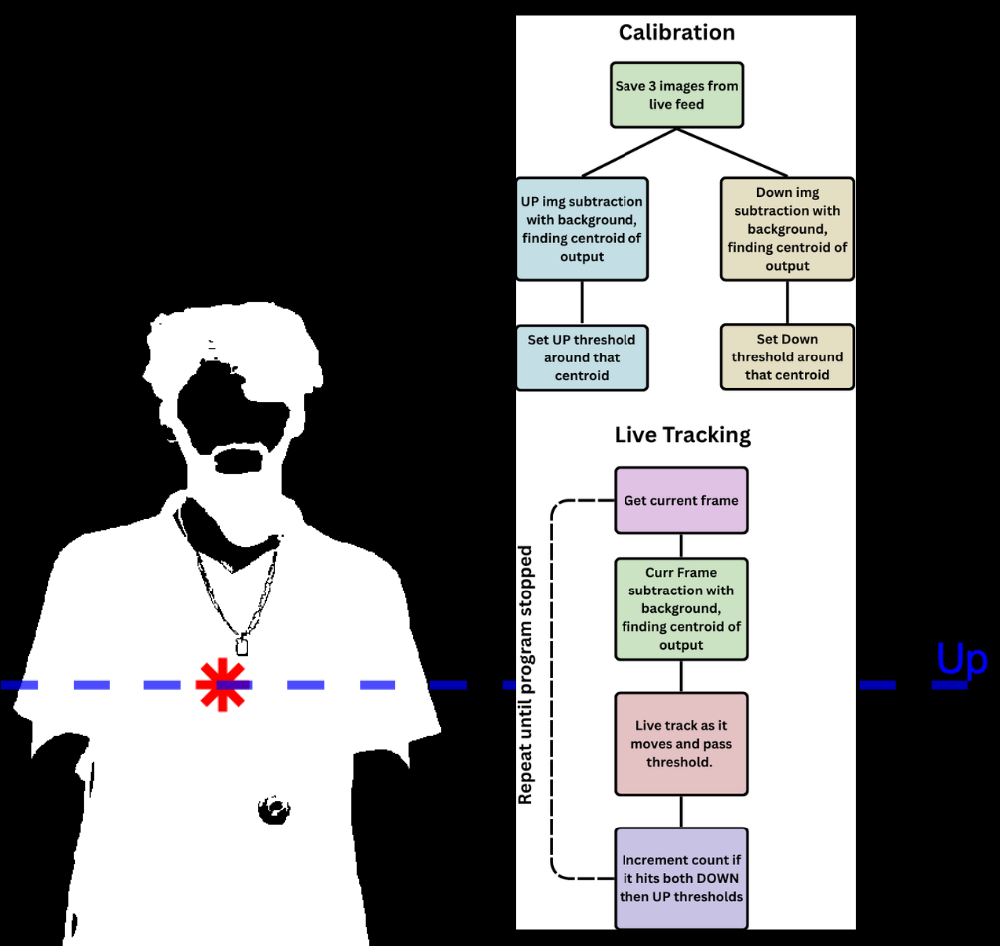
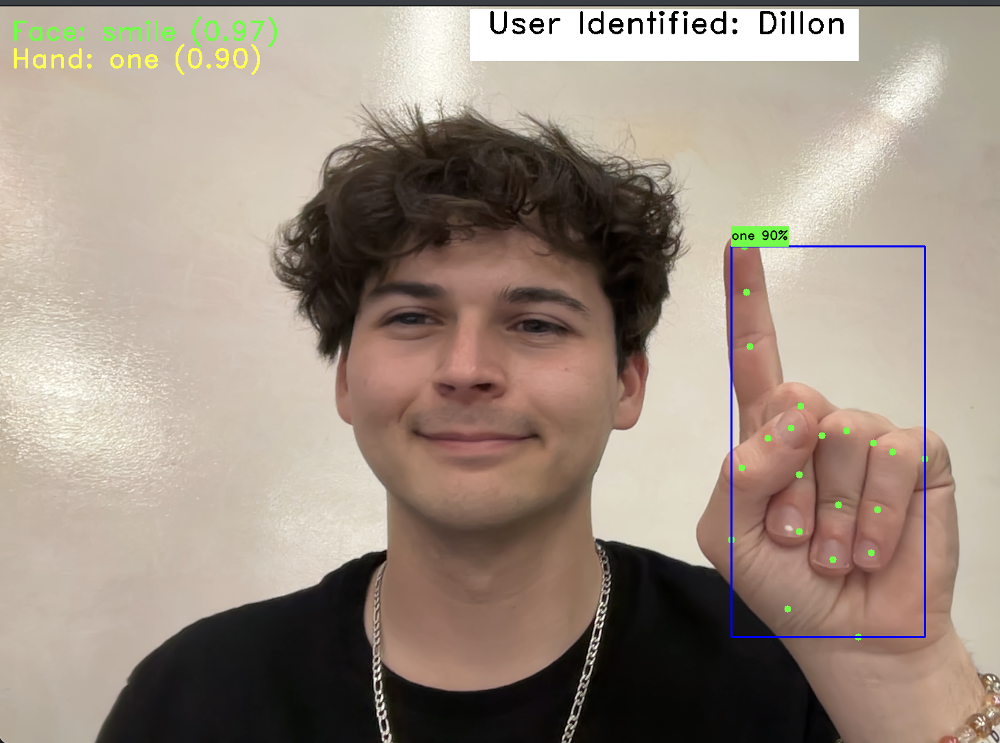
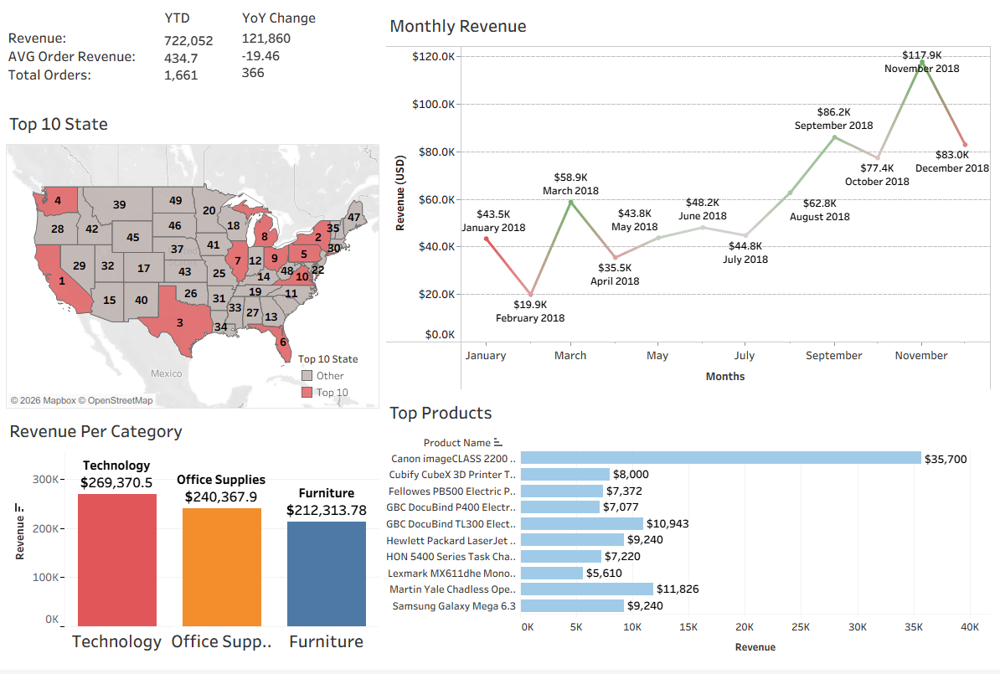
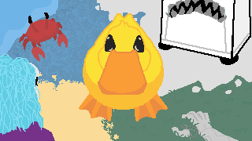

Featured Projects
"WorkoutTracker"
Final Project for Computer Vision class at Tarleton State University, Spring 2026. It incorporates two ways to track workouts without using Machine Learning. Centroid Tracking Algorithim for live applications and Point Feature Matching Algorithim for precorded video applications.
"GesturePass"
Final Project for Machine Learning class at Tarleton State University in Spring 2026. We split the work into 2 parts, one focusing on the hand gestures and the other focusing on the facial gestures. For each hand or face, you would train them individually, assigned to specific labels determined by input. A model was then trained on the data, with its weights being saved. After both models were imported into a final script to detect hand and face gestures at once, which will trigger user access if the combination is correct.
"Sales Dashboard"
Executed data aggregation and transformation using PostgreSQL and DBeaver, performed data validation in Excel, and created a Tableau Public dashboard for performance analysis, visualizing 4 unique KPIs.



Achievements & Credentials
Certifications
Comprehensive training in deep neural networks, model tuning, and sequence modeling for AI applications.
Publications
NeuroErgonomics (NYC 2026), Extended Abstract, 2026.
Awards
Decoding Real vs. Pseudo-word from Brain Activity. #2 out of 55 for technical merit, research content, and oral presentation.
Additional Projects
"Oscar P's Journey"
I led a team of four to build a platformer featuring Tarleton’s mascot. I wrote the core movement code and player mechanics, and built a system that let my teammates plug in their own custom levels without breaking the rest of the game. My main goal was making sure everyone had the creative freedom to design their own themes while keeping the gameplay feel consistent across the whole project.
